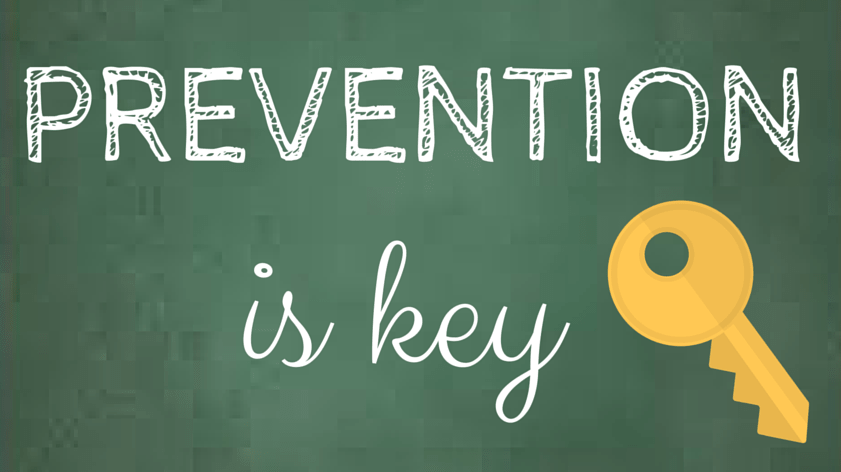
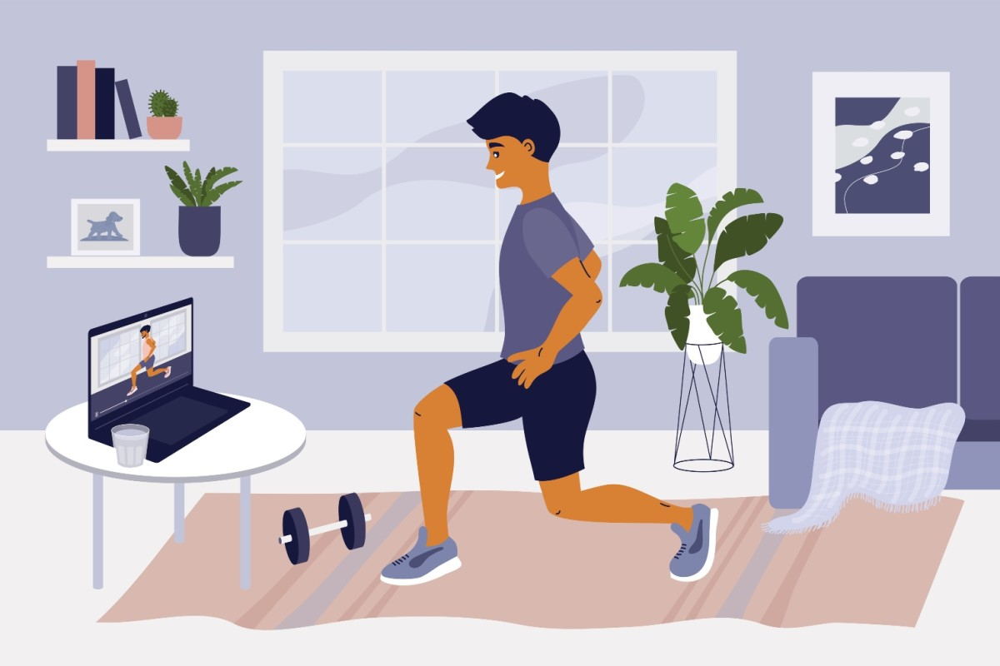
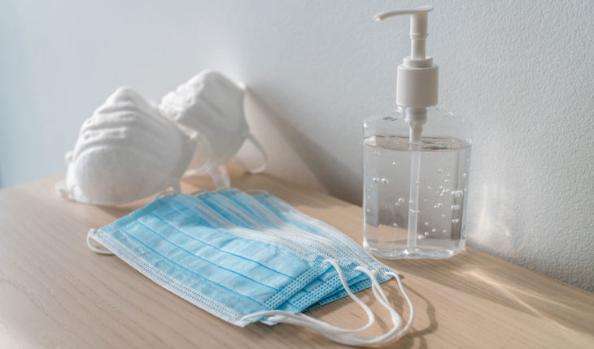

Quarantine==SAFE
In the event that you have minor side effects, for example, a slight hack or a gentle fever, there is commonly no compelling reason to look for clinical consideration. Remain at home, self-confine, and screen your side effects. Follow national direction on self-separation. The current C.D.C. direction suggests that you call a clinical expert in the event that you notice side effects and 
- Live in or have made a trip to a territory with a known coronavirus episode
- Have had close contact with somebody who has made a trip to a zone with a flare-up
- I have had close contact with anybody contaminated.
Try not to hurry to the crisis room — it is undoubtedly pressed with extremely wiped out individuals and exhausted representatives and specialists. At the point when you call your primary care physician, the person in question will exhort whether you should come in. On the off chance that you do, calling early will enable the specialist to get ready for your visit and forestall the spread of the infection to others in the workplace. Make certain to wear a cover when you go to the specialist's office and when you're around others. On the off chance that you can't discover a cover, you can make an improvised one from a scarf or a T-shirt. The C.D.C. additionally recommends that you maintain a strategic distance from open transportation, ride-sharing administrations, and taxis and that you separate yourself from others and creatures in your home as quickly as time permits. That implies not letting anybody go into your room and, in a perfect world, not sharing washrooms. Others should remain multiple feet from you and maintain a strategic distance from any surface you may have hacked on or contacted, including door handles, plates, cups, and towels. Purify the earth however much as could reasonably be expected.
Notwithstanding, in the event that you live in a territory with jungle fever or dengue fever it is significant that you don't overlook the side effects of fever. Look for clinical assistance. At the point when you go to the wellbeing office wear a veil if conceivable, keep at any rate 1-meter good ways from others, and don't contact surfaces with your hands. In the event that it is a youngster who is debilitated assistance, the kid adheres to this exhortation. Look for sure-fire clinical consideration on the off chance that you experience issues breathing or agony/pressure in the chest. In the event that conceivable, call your social insurance supplier ahead of time, so he/she can guide you to the correct wellbeing office.
Rehearsing hand and respiratory cleanliness is significant consistently and is simply the most ideal approach to secure others and yourself. At the point when conceivable keep up at any rate a 1 meter separation among yourself as well as other people. This is particularly significant on the off potential for success that you are having by somebody who is hacking or sniffling. Since some contaminated people may not yet be showing side effects or their manifestations might be gentle, keeping up a physical separation with everybody is a smart thought on the off chance that you are in a territory where COVID-19 is coursing.
On the off chance that you have been in close contact with somebody with COVID-19, you might be tainted. Close contact implies that you live with or have been in settings of under 1 meter from the individuals who have the sickness. In these cases, it is ideal to remain at home. Notwithstanding, in the event that you live in a region with intestinal sickness or dengue fever it is significant that you don't disregard indications of fever. Look for clinical assistance. At the point when you go to the wellbeing office wear a cover if conceivable, keep at any rate 1 meter inaccessible from others, and don't contact surfaces with your hands. On the off chance that it is a youngster who is wiped out assistance the kid adheres to this counsel.
In the event that you don't live in a zone with intestinal sickness or dengue fever kindly do the accompanying:- On the off chance that you become sick, even with exceptionally gentle indications, you should self-confine
- Regardless of whether you don't think you have been presented to COVID-19 however create manifestations, at that point self-confine and screen yourself
- You are bound to taint others in the beginning times of the malady when you simply have mellow indications, consequently, early self-confinement is significant.
- In the event that you don't have side effects however have been presented to a contaminated individual, self-isolate for 14 days.
In the event that you have unquestionably had COVID-19 (affirmed by a test) self-disengage for 14 days significantly after manifestations have vanished as a careful step – it isn't yet realized precisely to what extent individuals stay irresistible after they have recouped. Follow national counsel on self-seclusion.
Self-isolation is a significant measure taken by the individuals who have COVID-19 manifestations to abstain from tainting others in the network, including relatives. Self-isolation is the point at which an individual who is encountering fever, hack, or other COVID-19 side effects remains at home and doesn't go to work, school, or open spots. This can be intentional or dependent on his/her human services supplier's suggestion. IMPORTANT MEASURES NEED TO BE FOLLOW BY EVERYONE:
On the off chance that an individual is in self-seclusion, it is on the grounds that he/she is sick however not seriously sick (requiring clinical consideration)
- Have an enormous, very much ventilated with hand-cleanliness and can offices
- Keep in any event 1 meter from others, even from your relatives
- Screen your manifestations every day
- Segregate for 14 days, regardless of whether you feel unfortunate
- On the off chance that you create trouble breathing, contact your human services supplier promptly – call them first if conceivable
- Remain positive and stimulated by staying in contact with friends and family by telephone or on the web, and by practicing yourself at home. "Quarantine implies limiting exercises or isolating individuals who are not sick themselves but rather may have been presented to COVID-19. The objective is to forestall the spread of the infection when individuals simply create indications. Isolation implies separating individuals who are sick with indications of COVID-19 and might be irresistible to forestall the spread of the ailment. Physical distancing implies being truly separated. WHO suggests keeping in any event 1-meter good ways from others. This is a general measure that everybody should take regardless of whether they are well with no known presentation to COVID-19."
- Prior to contacting the veil, clean hands with a liquor based hand rub or cleanser and water. 
- Take the veil and assess it for tears or openings.
- Situate which side is the top side (where the metal strip is).
- Guarantee the best possible side of the cover faces outwards (the hued side).
- Spot the veil all over. Squeeze the metal strip or solid edge of the veil so it molds to the state of your nose.
- Pull down the veil's base so it covers your mouth and your jaw.
- Try not to contact the cover while you are wearing it for assurance.
- After use, remove the veil with clean hands; expel the versatile circles from behind the ears while getting the cover far from your face and garments, to abstain from contacting possibly sullied surfaces of the cover.
- Dispose of the cover in a shut container following use. Try not to reuse the cover.
- Perform hand cleanliness in the wake of contacting or disposing of the cover – Use liquor based hand rub or, if noticeably dirty, wash your hands with cleanser and water.
If you choose to wear a mask:
Know that there is a worldwide deficiency of clinical covers (both careful veils and N95 covers). These ought to be held however much as could reasonably be expected for social insurance laborers. Recall that covers are not a substitute for other, progressively compelling approaches to ensure yourself as well as other people against COVID-19, for example, habitually washing your hands, covering your hack with the twist of elbow or tissue and keep up a separation of at any rate 1 meter from others. See fundamental defensive measures against the new coronavirus for more data.